Problem 1
Exploring the Central Limit Theorem through simulations
1. Simulating Population Distributions
1. Uniform Distribution
\[ X \sim \text{Uniform}(a, b) \]
2. PDF:
\[ f_X(x) = \frac{1}{b - a}, \quad a \leq x \leq b \]
3. Mean:
\[ \mu = \frac{a + b}{2} \]
4. Variance:
\[ \sigma^2 = \frac{(b - a)^2}{12} \]
5. Exponential Distribution
\[ X \sim \text{Exponential}(\lambda) \]
6. PDF:
\[ f_X(x) = \lambda e^{-\lambda x}, \quad x \geq 0 \]
7. Mean:
\[ \mu = \frac{1}{\lambda} \]
8. Variance:
\[ \sigma^2 = \frac{1}{\lambda^2} \]
9. Binomial Distribution
\[ X \sim \text{Binomial}(n, p) \]
10. PMF:
\[ P(X = k) = \binom{n}{k} p^k (1 - p)^{n - k}, \quad k = 0, 1, \ldots, n \]
11. Mean:
\[ \mu = n p \]
12. Variance:
\[ \sigma^2 = n p (1 - p) \]
For each distribution, generate a large "population" sample of size \( N \) (e.g., \( N = 100,000 \)).
2. Sampling & Visualization
- Draw Random Samples
For each population, and for each sample size \(n\in\{5,10,30,50\}\): - Repeat \(M\) times (e.g., \(M=1{,}000\)):
- Take a random sample \(X_1, X_2, \dots, X_n\).
- Compute the sample mean
\(\(\bar{X} = \frac{1}{n}\sum_{i=1}^n X_i.\)\)
-
Collect the \(M\) values of \(\bar{X}\) to form the sampling distribution of the mean.
-
Plot Histograms
- For each \(n\), plot a histogram of the \(M\) sample means.
- Overlay the Normal PDF with parameters
\(\(\mu_{\bar X} = \mu,\quad \sigma_{\bar X} = \frac{\sigma}{\sqrt{n}}.\)\) - Observe how, as \(n\) increases, the histogram approaches
\(\(\bar{X} \ \xrightarrow{d}\ \mathcal{N}\!\Bigl(\mu,\,\tfrac{\sigma^2}{n}\Bigr).\)\)
3. Parameter Exploration
- Shape of Original Distribution
- Skewed distributions (e.g., Exponential) require larger \(n\) before the sampling distribution appears Normal.
-
Symmetric distributions (e.g., Uniform) converge more quickly.
-
Effect of Variance
- A larger population variance \(\sigma^2\) yields a wider sampling distribution: \(\(\mathrm{Var}(\bar{X}) = \frac{\sigma^2}{n}.\)\)
-
Doubling \(\sigma^2\) doubles the spread of \(\bar{X}\), but increasing \(n\) reduces spread by \(1/n\).
-
Rate of Convergence
- For distributions with finite higher moments, the Berry–Esseen theorem gives a bound on the convergence rate:
\(\(\sup_x \Bigl| F_n(x) - \Phi(x)\Bigr| \le \frac{C\,\rho}{\sigma^3\sqrt{n}},\)\)
where \(\rho = \mathbb{E}\!\bigl|X - \mu\bigr|^3\) and \(C\) is a constant.
4. Practical Applications of the CLT
- Estimating Population Parameters
-
Confidence intervals for a population mean use
\(\(\bar{X} \pm z_{\,\alpha/2}\,\frac{\sigma}{\sqrt{n}}.\)\) -
Quality Control in Manufacturing
-
Monitor sample means of product dimensions to detect shifts from target: $$ \bar{X} \sim \mathcal{N}!\Bigl(\mu_0,\tfrac{\sigma^2}{n}\Bigr). $$
-
Financial Modeling
- Aggregated returns over many assets or time intervals often assumed Normally distributed:
$$ R = \sum_{i=1}^n r_i,\quad r_i\sim\text{IID}, $$
so by CLT,
$$ R \approx \mathcal{N}!\bigl(n\mu,\;n\sigma^2\bigr). $$
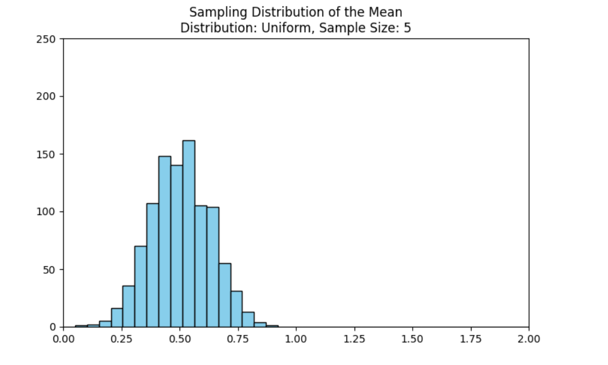
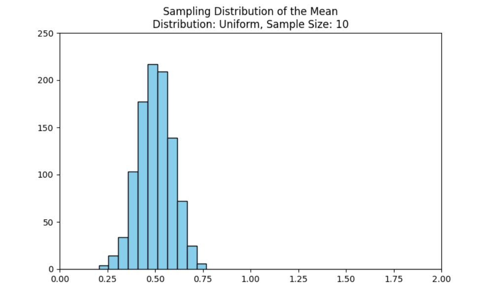
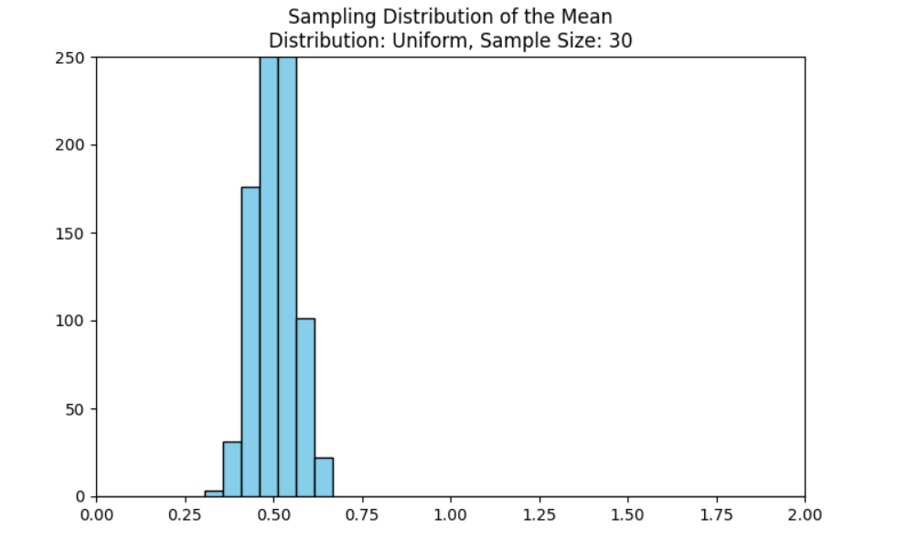
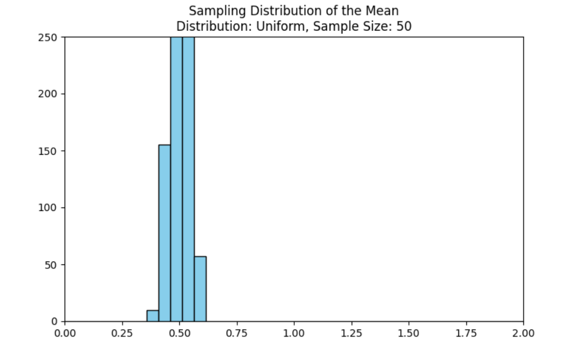
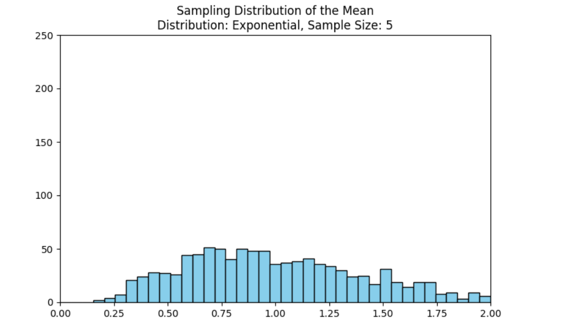
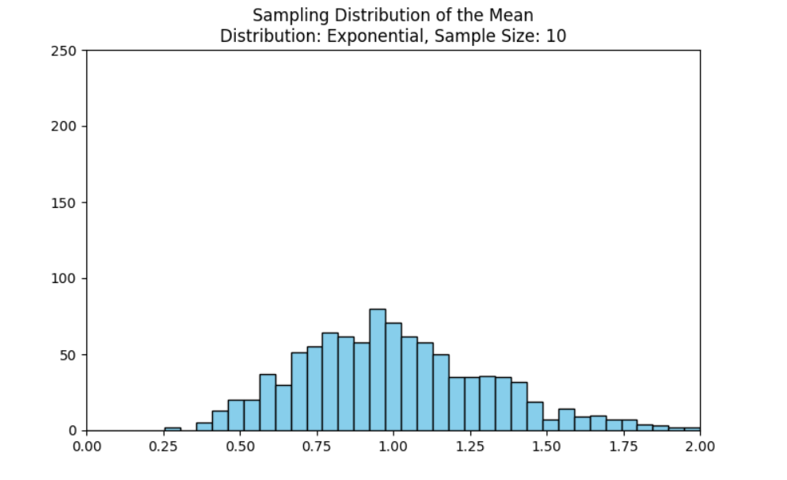
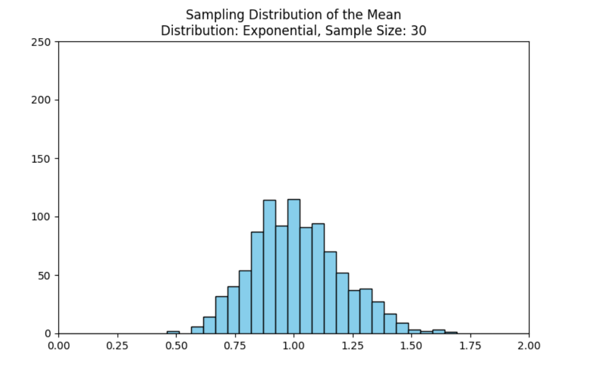
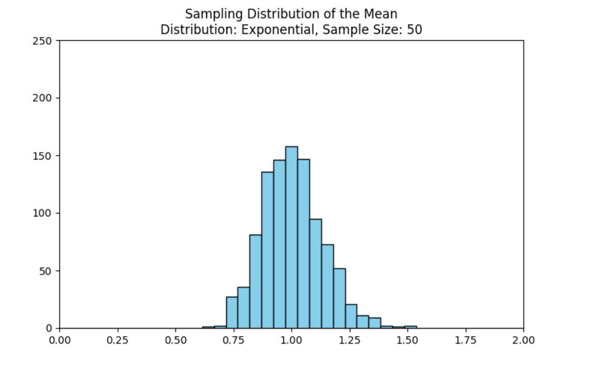
Animation

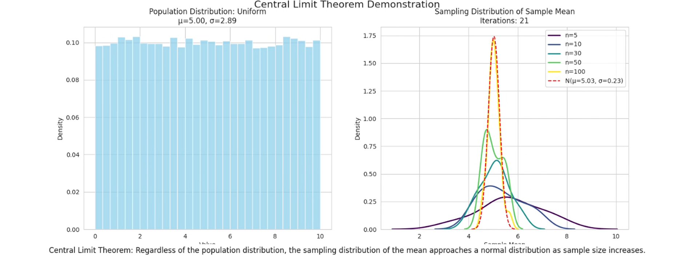
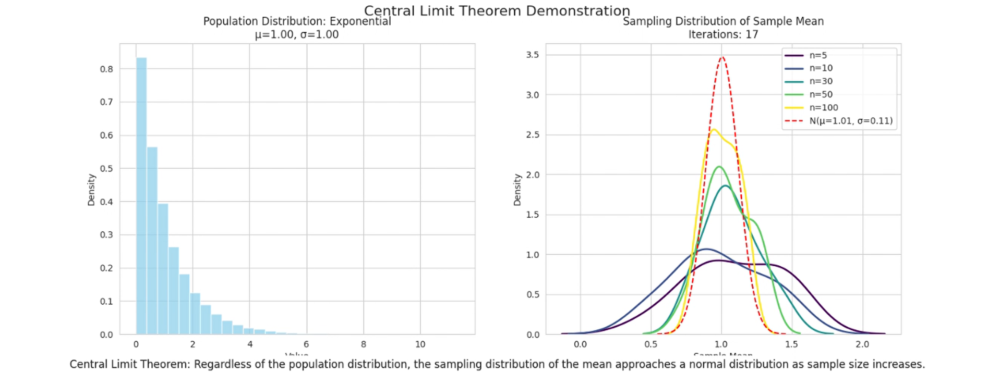
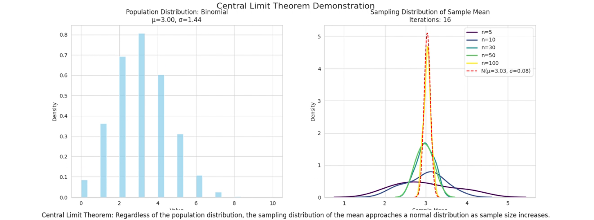